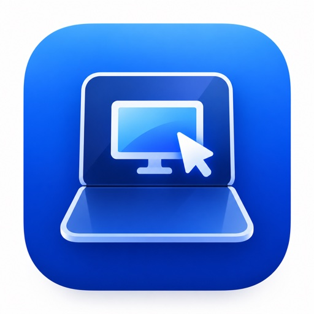

把熟悉的桌面带到手边。轻点、滑动、缩放，在手机和平板上控制你自己的 Mac。
iPhone / iPad 版已上架，前往 App Store。1.5 版本正在审核。

下载后解压，将应用拖入“应用程序”并打开。按提示授予屏幕录制与辅助功能权限，再用手机扫码配对。
Mac 接收端 1.5 已提交 App Store 审核；独立下载包正在准备正式签名与公证，完成后将在这里提供下载。
支持 Apple 芯片与 Intel Mac · macOS 15 或更新版本接收端需要保持运行；Mac App Store 版本与独立下载包将分别提供。
DuoGlide 不收集任何用户数据。不含广告、分析统计或追踪 SDK。屏幕与输入只在你授权配对的设备之间实时加密传输。